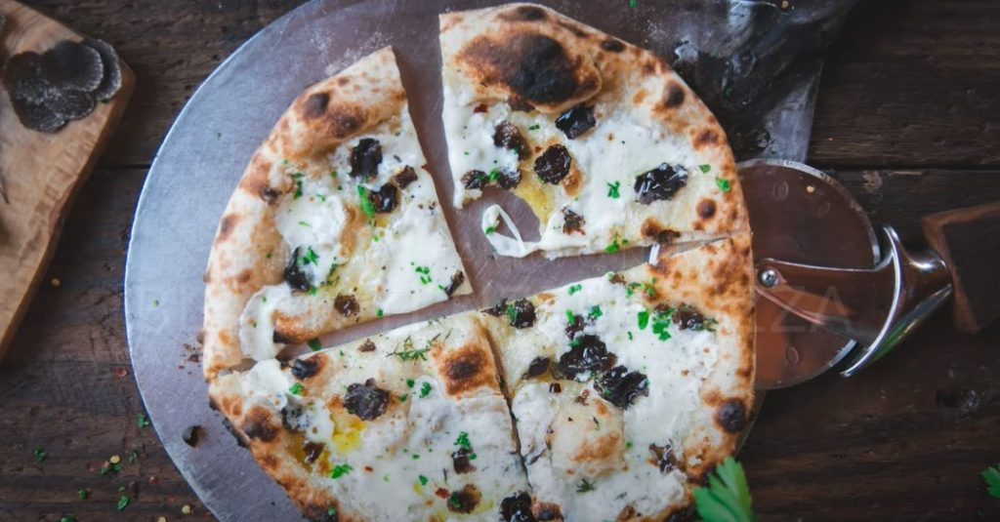

Pizza Bianca

Descrição
Deliciosa receita de pizza bianca - pizza sem molho de tomate - criada pelo chef Leônidas!
Dica: dê preferência por temperos frescos, isso é, não secos.
Ingredientes
- farinha
- óleo
- mussarela de búfalla
- ricota
- temperos à gosto
Passos
- faça a massa
- adicione os ingerdientes
- tempere com cuidado
- leve ao ao forno
- sirva ainda quentinha